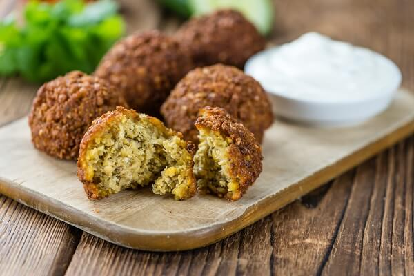

Falafel Recipe

A veces, el falafel es descrito como unas albóndigas vegetarianas de garbanzo. Pero realmente no se les hace mucha justicia con esta definición, puesto que e
l falafel es un plato muy antiguo que tiene un sabor extraordinario y ninguna intención de ser un sustitutivo de las albóndigas de carne, simplemente comparten la forma.
Ingredients
- 400 gr de garbanzos
- ½ cebolla
- 1 ½ dientes de ajo
- 100 gr de harina de garbanzo
- 1 cucharadita de levadura
- 2 cucharaditas de comino en polvo
Steps
- Enjuaga los garbanzos ya después de sus 24 horas en remojo y escúrrelos bien, no deben quedar restos de agua.
- Coge el robot de cocina y tritura en él los garbanzos, los dientes de ajo, la cebolla, un manojito de cilantro fresco, otro de perejil, la levadura, el comino, la sal y la pimienta.
- Ahora, deja reposar la masa durante media hora en la nevera.